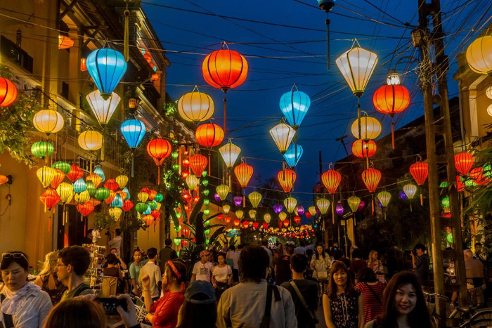

Vịnh Hạ Long thuộc tỉnh Quảng Ninh, nổi tiếng với hàng nghìn hòn đảo đá vôi nhô lên giữa làn nước xanh ngọc bích. Nơi đây được UNESCO công nhận là Di sản thiên nhiên thế giới.
Trang minh họa cách HTML tổ chức hình ảnh và văn bản.
Mục lục:
Vịnh Hạ Long thuộc tỉnh Quảng Ninh, nổi tiếng với hàng nghìn hòn đảo đá vôi nhô lên giữa làn nước xanh ngọc bích. Nơi đây được UNESCO công nhận là Di sản thiên nhiên thế giới.
Phố cổ Hội An thuộc tỉnh Quảng Nam, nổi bật với những ngôi nhà mái ngói rêu phong và hàng đèn lồng nhiều màu sắc. Mỗi buổi tối, phố cổ lung linh ánh đèn và thu hút đông đảo du khách.
